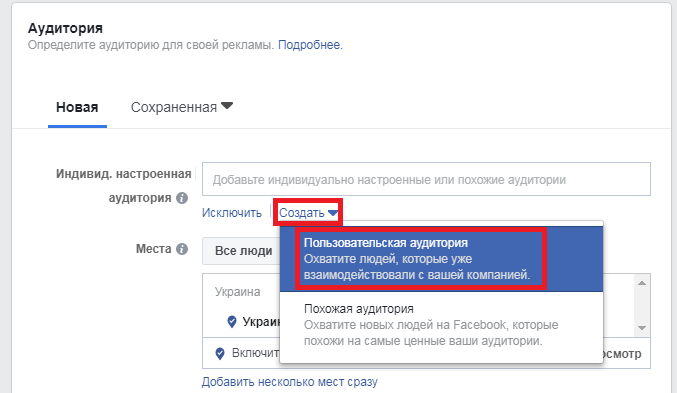

Главный > Блог > Почему маркетинг в социальных сетях (SMM) важен для вашего бизнеса? 10 ПРЕИМУЩЕСТВ SMM
Почему маркетинг в социальных сетях (SMM) важен для вашего бизнеса? 10 ПРЕИМУЩЕСТВ SMM
За последние несколько лет социальные сети полностью изменили весь мир, а также мир маркетинга. Эти новые формы коммуникации могут оказать огромное влияние на рост вашего бизнеса по-разному.
.png)
Мир эволюционировал, и старые способы рекламы, такие как газеты и реклама, теперь кажутся старомодными. Теперь социальные сети стали более быстрым и эффективным способом продвижения вашего бизнеса по всему миру.
Новое поколение, они никогда не знали жизни без Интернета и социальных сетей. 1/3 женщин в возрасте от 18 до 34 лет проверяют свои социальные сети, когда только просыпаются.
Интернету потребовалось почти 4 года, чтобы охватить 50 миллионов пользователей, в отличие от радио и телевидения, которым потребовалось 38 и 13 лет соответственно. Это объясняется тем, что новое поколение очень сильно зависит от Интернета и социальных сетей. Итак, социальные сети могут быть очень прибыльными и прибыльными для вашего бизнеса.
Не размещайте ссылки на свой веб-сайт в социальных сетях, как какой-то робот. Постарайтесь как можно больше дружить с посетителями. Предоставьте им то, что они ищут.
Еще одна важная вещь, о которой вы должны помнить, чтобы развивать свой бизнес через социальные сети, - это ежедневно публиковать сообщения на различных платформах социальных сетей. Будьте реальными, искренними и лучшими. Надеюсь, все это окажет большое влияние на ваш бизнес.
Если вы ежедневно публикуете сообщения и разумно используете социальные сети, это может оказаться ключевым фактором в повышении узнаваемости бренда.
Вы даже можете пойти на платную кампанию, при этом вам придется платить, но люди из определенной области увидят вашу рекламу. Следовательно, есть шансы получить больше трафика на ваших сайтах. И не беспокойтесь, если вы не хотите тратить лишние деньги на рекламу. Вы можете сделать это даже на своей тяжелой работе.
Это более удобный способ привлечь вашу аудиторию и поможет вам в росте вашего бизнеса.
Они быстро получат всю информацию через ваши социальные сети. Так что с этой стороны это тоже поможет. Основное внимание здесь уделяется помощи клиентам. Никогда не предлагайте их. Всегда предоставляйте им полезный интерфейс.
Помните, что не все стратегии и факторы, упомянутые выше, будут работать на вас. Все зависит от вида бизнеса. Так что не беспокойтесь, попробуйте их все и посмотрите, что вам подходит. Всегда старайтесь совершенствоваться, и в конце концов все получится.
Новое поколение, они никогда не знали жизни без Интернета и социальных сетей. 1/3 женщин в возрасте от 18 до 34 лет проверяют свои социальные сети, когда только просыпаются.
Интернету потребовалось почти 4 года, чтобы охватить 50 миллионов пользователей, в отличие от радио и телевидения, которым потребовалось 38 и 13 лет соответственно. Это объясняется тем, что новое поколение очень сильно зависит от Интернета и социальных сетей. Итак, социальные сети могут быть очень прибыльными и прибыльными для вашего бизнеса.
Как маркетинг в социальных сетях может способствовать развитию вашего бизнеса:
Маркетинг в социальных сетях может способствовать развитию вашего бизнеса во многих отношениях. Все, что вам нужно, это полный стратегический план, и вы должны полностью осознавать, что хотите делать.Не размещайте ссылки на свой веб-сайт в социальных сетях, как какой-то робот. Постарайтесь как можно больше дружить с посетителями. Предоставьте им то, что они ищут.
Еще одна важная вещь, о которой вы должны помнить, чтобы развивать свой бизнес через социальные сети, - это ежедневно публиковать сообщения на различных платформах социальных сетей. Будьте реальными, искренними и лучшими. Надеюсь, все это окажет большое влияние на ваш бизнес.
Преимущества маркетинга в социальных сетях для вашего бизнеса:
Маркетинг в социальных сетях - это способ привлечь посещаемость и внимание через социальные сети. В этом есть масса преимуществ. Некоторые из них упомянуты ниже:Продемонстрируйте свой бренд
Социальные сети - это платформа, с которой вы можете продемонстрировать свой бренд и продвигать его, не учитывая расходы. Это помогает в установлении отношений с клиентами и позволяет вам развивать свой бизнес за счет увеличения продаж. Так почему бы не использовать социальные сети? Это даже бесплатно.Узнаваемость бренда
Социальные сети - это платформа, на которой вы можете построить отличные отношения с клиентами и повысить узнаваемость бренда. Потому что социальные сети собирают множество людей на одной платформе.Если вы ежедневно публикуете сообщения и разумно используете социальные сети, это может оказаться ключевым фактором в повышении узнаваемости бренда.
Увеличивать объем продаж
Социальные сети определенно помогут вам увеличить продажи, если вы на правильном пути. Все, что вам нужно сделать, это привлечь нужную аудиторию с правильным интересным контентом в соответствии с их потребностями. Всегда имейте шпионский доступ к тому, что люди говорят своим конкурентам, и работайте над этим. У компаний и брендов ,которые работают с умом, больше шансов увеличить свои продажи с помощью маркетинга в социальных сетях.Более эффективный таргетинг на аудиторию
Если вы ищете аудиторию определенного места, тогда сайты социальных сетей могут оказаться очень полезными для вас, потому что с их помощью вы можете поразить аудиторию определенного места.

Вы даже можете пойти на платную кампанию, при этом вам придется платить, но люди из определенной области увидят вашу рекламу. Следовательно, есть шансы получить больше трафика на ваших сайтах. И не беспокойтесь, если вы не хотите тратить лишние деньги на рекламу. Вы можете сделать это даже на своей тяжелой работе.
Снижение затрат на маркетинг
Маркетинг в социальных сетях помогает снизить маркетинговые расходы. Если вы планируете прекратить какое-то продвижение. Вам не придется снимать рекламные щиты или что-то в этом роде. Достаточно одного щелчка мыши, чтобы работа была выполнена.Это более удобный способ привлечь вашу аудиторию и поможет вам в росте вашего бизнеса.
Создайте лояльное сообщество
Люди обычно выбирают предприятия, в которых активно живет оживленный город, и социальные сети могут помочь вам в этом. Если вы используете правильную тактику и вам удастся собрать нужную аудиторию с помощью интересного контента, тогда есть некоторые шансы привлечь все больше и больше людей, чтобы заглянуть в ваш бизнес, и это, безусловно, поможет вам во многих аспектах. Создание лояльного сообщества необходимо для вашего долгосрочного успеха.Раскрыть культуру компании
Старайтесь быть максимально открытыми и дружелюбными по отношению к посетителям, это поможет вам раскрыть культуру вашей компании. Это даже помогает в развитии лояльных клиентов. Вовлекайте их с умом, учитывая их потребности.Запуск продукта
Если вы запускаете какую-то новую услугу или продукт, то платформы социальных сетей помогут вам по-разному, потому что они являются самым простым способом взаимодействия с клиентами в наш современный век оцифровки.Они быстро получат всю информацию через ваши социальные сети. Так что с этой стороны это тоже поможет. Основное внимание здесь уделяется помощи клиентам. Никогда не предлагайте их. Всегда предоставляйте им полезный интерфейс.
Улучшение обслуживания клиентов
Социальные сети - отличный источник обратной связи, потому что у каждого есть свои профили, и каждый может оставить вам сообщение или отзыв. Это повышает доверие к бренду и создает отличную связь между вами и покупателями.Вывод :
Прочитав все эти факторы, упомянутые выше, теперь вы знаете важность маркетинга в социальных сетях. У него бесчисленное множество преимуществ. Все зависит от вас, насколько грамотно вы используете социальные сети для развития своего бизнеса.Помните, что не все стратегии и факторы, упомянутые выше, будут работать на вас. Все зависит от вида бизнеса. Так что не беспокойтесь, попробуйте их все и посмотрите, что вам подходит. Всегда старайтесь совершенствоваться, и в конце концов все получится.